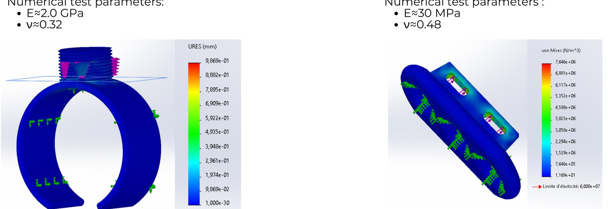

Mobilisdispositif de rééducation du poignet
Projet R&D « fil rouge » · Master 1 BTI, Aix-Marseille Université
Conception d'une orthèse modulable pour la rééducation du poignet après fracture.

- Période
- Sept. 2025 – avr. 2026
- Lieu
- Marseille
- Rôle
- Co-concepteur, projet d'équipe
Contexte clinique
Les fractures du poignet représentent environ 17,5 % des fractures de l'adulte. Après l'immobilisation, la mobilité du poignet chute fortement : la flexion passe d'environ 66° à 24° et l'extension d'environ 68° à 25°.
Le problème. La littérature montre qu'une mobilisation précoce, active et passive, réduit la douleur et améliore la récupération, et que l'utilisabilité d'un dispositif conditionne la persévérance du patient. Pourtant, les orthèses du marché aident surtout la préhension, pas la rééducation du poignet lui-même, et les exercices à domicile restent peu personnalisés.
Notre réponse. Une orthèse unique et modulable, qui assiste ou résiste au mouvement de flexion-extension selon le réglage, pour accompagner le patient tout au long de sa rééducation.
Le dispositif
Un bracelet d'avant-bras porte une molette qui règle la tension de bandes élastiques reliées à une poignée tenue dans la main. Selon le montage, les élastiques accompagnent le mouvement du poignet (assistance) ou s'y opposent (résistance).
- Pièces imprimées en 3D : PLA pour les pièces rigides, TPU souple pour la poignée.
- Sangles en polyester et nylon, boucle de serrage, protections en cuir.
- Élastiques en caoutchouc naturel et synthétique.
- Réglementaire : dispositif médical de classe I (MDR 2017/745) ; référentiels ISO 13485, ISO 14971, ISO 12100 et ISO 10993.
Dimensionnement des élastiques
La tension est déduite de la physiologie : on retient 20 % du moment maximal de flexion-extension du poignet, charge adaptée à une rééducation précoce, que l'on convertit en force au niveau de la main, puis en allongement des élastiques.
Avec ces valeurs, les élastiques doivent fournir une force de l'ordre de 9 à 24 N selon le patient.
Simulation numérique
Les pièces imprimées ont été vérifiées par éléments finis sous SolidWorks : déplacement du bracelet en PLA, contrainte dans la poignée en TPU, puis durée de vie en fatigue du TPU.
La tenue en fatigue de la poignée est estimée à partir de la courbe S-N du TPU 95A imprimé, modélisée par une loi de Basquin (σa = C × Nfb, avec C ≈ 42,3 et b ≈ −0,088) : la durée de vie minimale calculée est d'environ 8,7 millions de cycles.
Étude expérimentale
Question de recherche : dans quelle mesure un dispositif modulable d'assistance / résistance peut-il améliorer la rééducation du poignet ? L'objectif principal était de mesurer son influence sur l'amplitude articulaire et la vitesse angulaire en flexion et en extension ; l'objectif secondaire, d'évaluer l'expérience utilisateur.
- Participants : 10 volontaires sains, sans antécédent de pathologie du poignet.
- Préparation : mise en place du dispositif, échauffement de 30 flexions-extensions, puis mesures de référence.
- Protocole : 10 flexions, 5 minutes de repos, 10 extensions, sans dispositif puis avec dispositif en mode assistance et en mode résistance, dans un ordre randomisé.
- Mesures : une caméra et trois marqueurs réfléchissants pour l'amplitude maximale et la vitesse angulaire ; questionnaire d'utilisabilité F-SUS (10 à 15 minutes).
- Statistiques : comparaison sans dispositif / assistance et sans dispositif / résistance, par ANOVA à mesures répétées ou test de Friedman selon les données, avec tests post-hoc.
Résultats
Chez des sujets sains, l'amplitude articulaire ne change pas significativement : les participants n'étaient pas limités au départ. En revanche, le mode résistance ralentit nettement l'extension, ce qui montre que le dispositif sollicite bien le système neuromusculaire. Les participants l'ont jugé très facile à utiliser.
Limites et perspectives
Limites. L'échantillon est réduit et homogène (8 sujets jeunes et sains, aucun patient en rééducation), ce qui limite la généralisation à la population cible. Un seul niveau de tension a été testé (20 % du moment maximal).
Perspectives. Mesurer l'activation musculaire par électromyographie sur les fléchisseurs et extenseurs du poignet, explorer plusieurs niveaux de charge (relation dose-réponse), optimiser le dispositif, puis le valider cliniquement auprès de patients après fracture.
Le projet a été mené de septembre à mars, de l'état de l'art à la soutenance devant jury, et sélectionné pour être proposé au programme PEPITE (Pépite Provence).
Compétences mobilisées
- Analyse du besoin
- SolidWorks
- Éléments finis
- Analyse en fatigue
- Choix des matériaux
- Impression 3D
- Dimensionnement
- Analyse cinématique
- Statistiques
- Utilisabilité (F-SUS)
- MDR classe I
- Travail d'équipe